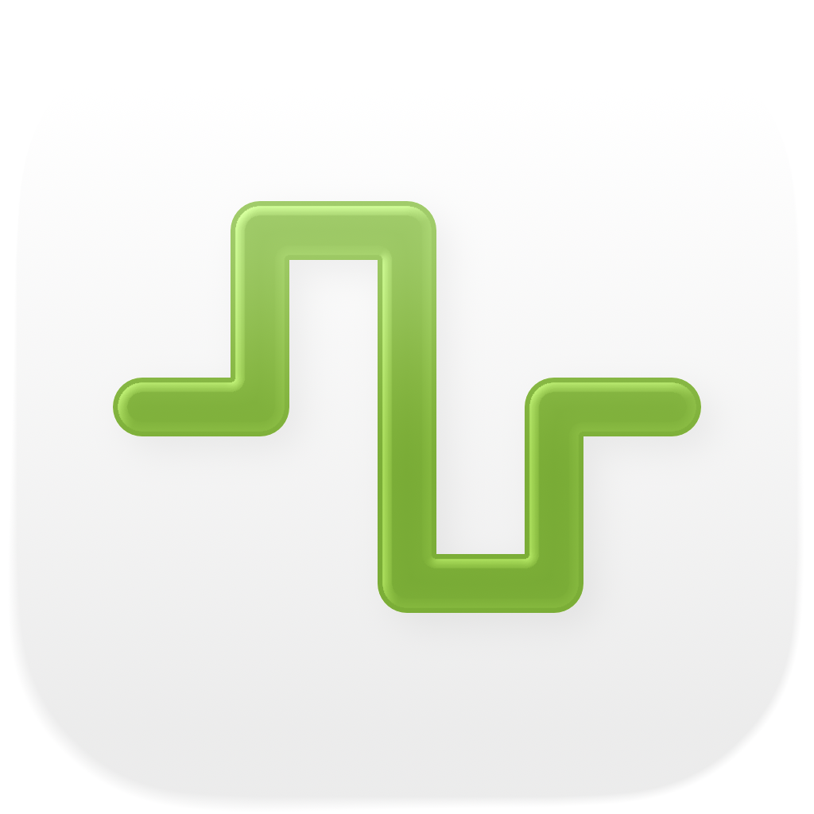

Metric iOS
Boîte à outils de timing et de fréquences de poche pour iPhone et iPad, désormais avec un métronome intégré. Que vous mainteniez le tempo, régliez des temps de délai dans un mix, accordiez un patch FM, synchronisiez un LFO ou transposiez un sample, Metric vous donne des réponses instantanées et précises le tout dans une application sans distraction. Désormais avec Siri, Shortcuts, des widgets et une Live Activity.
- Métronome avec tap tempo et battements visuels
- Convertisseur BPM → ms / Hz (normal, pointé, triolet)
- Table note ↔ fréquence (108 notes, accordage ajustable)
- Transposition et vitesse, calculateur FM, taux LFO, 32 harmoniques
- Siri, Shortcuts et un widget BPM sur l'écran d'accueil/verrouillage
Captures d'écran
Comprend des captures en mode clair et sombre qui suivent le thème du site.


Fonctionnalités
- Métronome : Un métronome précis avec un grand cadran de tempo, un réglage du tempo par tap, des signatures rythmiques et subdivisions ajustables, et un indicateur de battement visuel clair. Le timing protégé en arrière-plan maintient le clic régulier même écran verrouillé.
- Tap Tempo : Tapez n'importe où sur la grande cible tactile pour mesurer le tempo. Voyez le BPM instantané de votre dernier tap et une moyenne glissante sur jusqu'à huit taps. Envoyez l'une ou l'autre lecture directement vers le convertisseur BPM, la transposition ou les taux LFO en un seul toucher.
- Convertisseur BPM → ms / Hz : Entrez un tempo et lisez les valeurs normales, pointées et triolets pour les rondes, blanches, noires, croches et doubles croches. Chaque ligne affiche les millisecondes et la fréquence en Hz, vous permettant de régler le délai, le pré-délai de réverbe ou le timing du sidechain sans calculatrice.
- Transposition et vitesse : Choisissez une tonalité d'origine et une tonalité cible pour voir le décalage en demi-tons, le nom de l'intervalle et la valeur de transposition DAW exacte. Ajoutez un BPM d'origine et Metric calcule le nouveau tempo et le ratio de vitesse de lecture. Affinez avec un curseur de cents (±100) et un curseur de vitesse couvrant deux octaves complètes (±24 demi-tons).
- Table de fréquences des notes : Parcourez les 108 notes chromatiques de C0 à B8. Chaque note affiche son numéro MIDI, sa fréquence en Hz, sa période en millisecondes et le nombre d'échantillons à 44,1 kHz, 48 kHz et 96 kHz. Le Do central est signalé pour référence rapide. L'accordage A4 configurable (440 Hz par défaut) recalcule instantanément chaque valeur.
- Calculateur FM : L'explorateur de ratios vous permet de définir les ratios porteuse et modulateur avec une fréquence de base et de choisir parmi dix préréglages FM classiques. Le mode correction de hauteur fonctionne en sens inverse : choisissez une note cible et obtenez les fréquences exactes de la porteuse et du modulateur. Les deux modes affichent une table de bandes latérales avec jusqu'à dix partiels, leurs fréquences, les notes les plus proches et les amplitudes codées par couleur pilotées par un curseur d'indice de modulation.
- Calculateur de taux LFO : Convertissez n'importe quel BPM en taux LFO à travers 17 divisions musicales, de quatre mesures à 1/32 triolets. Chaque ligne affiche les Hz, la période en millisecondes et les échantillons par cycle à 44,1 kHz, 48 kHz et 96 kHz. La recherche inverse vous permet d'entrer n'importe quelle valeur en Hz et de trouver la division musicale la plus proche.
- Explorateur de séries harmoniques : Partez d'une fréquence ou choisissez n'importe quelle note et voyez les 32 premiers harmoniques listés avec la fréquence, le nom de la note la plus proche, l'écart en cents et l'étiquette d'intervalle. Les harmoniques de rang bas sont codés par couleur pour une identification facile. Les écarts supérieurs à 30 cents sont mis en surbrillance.
Des outils qui communiquent entre eux
Tapez un tempo une fois et il apparaît partout : le convertisseur BPM, la transposition et les taux LFO partagent tous le même BPM en temps réel. Changez votre référence d'accordage A4 et elle se met à jour simultanément dans la fréquence des notes, le calculateur FM et les harmoniques.
Siri, Shortcuts et widgets
Pilotez Metric en mains libres. Demandez à Siri de démarrer ou d'arrêter le métronome, de définir un BPM, de taper un tempo, de convertir un BPM en millisecondes, de trouver la fréquence d'une note ou de transposer un tempo. Chaque outil est aussi une action Shortcuts, et le widget BPM garde votre tempo sur l'écran d'accueil et de verrouillage, avec une Live Activity et la Dynamic Island pendant que le métronome tourne.
Conçu pour les producteurs
- Fonctionne entièrement hors ligne pas de compte, pas de publicités, pas de suivi
- Interface compatible mode sombre
- Dispositions adaptatives pour iPhone et iPad
- Trois fréquences d'échantillonnage standard : 44,1 kHz, 48 kHz et 96 kHz
- Accordage de référence A4 configurable
Que vous soyez un producteur programmant des délais, un concepteur sonore sculptant des timbres FM, un claviériste accordant des oscillateurs, ou un ingénieur du son vérifiant des fréquences, Metric met chaque réponse en timing et fréquence dans votre poche.